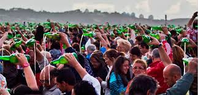

Fiesta de la Sidra Natural

El Homenaje a la Esencia de Asturias
La Fiesta de la Sidra Natural de Gijón es una de las citas más queridas y multitudinarias del verano asturiano. Declarada Fiesta de Interés Turístico Regional, este evento celebra la cultura milenaria que rodea a nuestra bebida más emblemática, convirtiendo la ciudad en un gran llagar a cielo abierto.
El momento cumbre del festival es, sin duda, el Récord Mundial de Escanciado Simultáneo, donde miles de personas se reúnen en la Playa de Poniente para escanciar al unísono, creando una imagen icónica que da la vuelta al mundo. Es un acto de hermandad que simboliza el orgullo y la hospitalidad de nuestra tierra.
Además del récord, los asistentes pueden disfrutar del Mercadín de la Sidra y la Manzana, los concursos de escanciadores en la Plaza Mayor y las catas oficiales para elegir la "Mejor Sidra de la Fiesta". Todo ello acompañado de música folclórica, talleres y un ambiente inigualable donde el olor a manzana y el sonido de las gaitas inundan cada rincón.